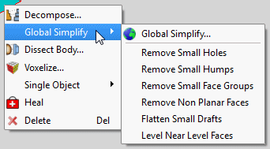
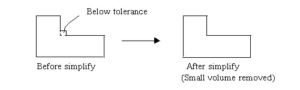
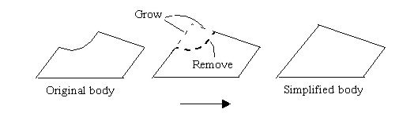
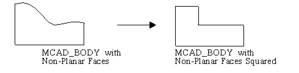
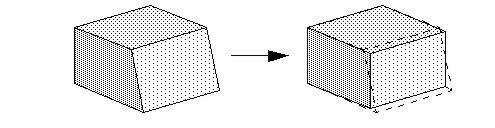
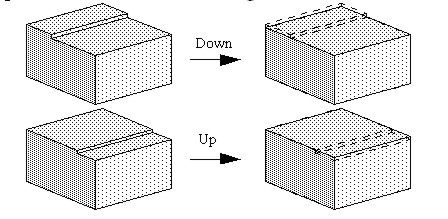

Use global simplification
to remove small features and flatten faces from all sections of
a selected MCAD part/body. Global simplification is a ‘batch’ run
of a number of local simplification processes.
Procedure
- Select
the part and click the Global Simplify icon or choose to
open the Global Simplify dialog box.
- Perform one global simplify
operation at a time. For example, remove small holes, then remove
non-planar faces.
If
failures arise, that is, if “F”s appear in the MCAD Bridge Monitor
dialog box, then try some local simplification or healing, then retry.
- Repeat until you simplify
to the extent where the geometry could have been created normally
in Simcenter Flotherm.
- Alternatively, select a part
or body and right-click to display the context-sensitive menu, see Figure 1.
Figure 1. Global Simplify Context-Sensitive
Menu Options
- The option
opens the Global Simplify dialog box. The other options act on the
selected object.
Results
Figure 3 to Figure 7 show the results of using the global
simplify options.
Figure 2. Removal of Small Face
Groups
Figure 3. Replacement of Non Planar Faces
Figure 4. Replacement of Complex
Non Planar Faces 
Figure 5. Flattening Small Drafts
Figure 6. Flattening of a Complex
Small Draft
Figure 7. Leveling ‘Near Level’ Faces